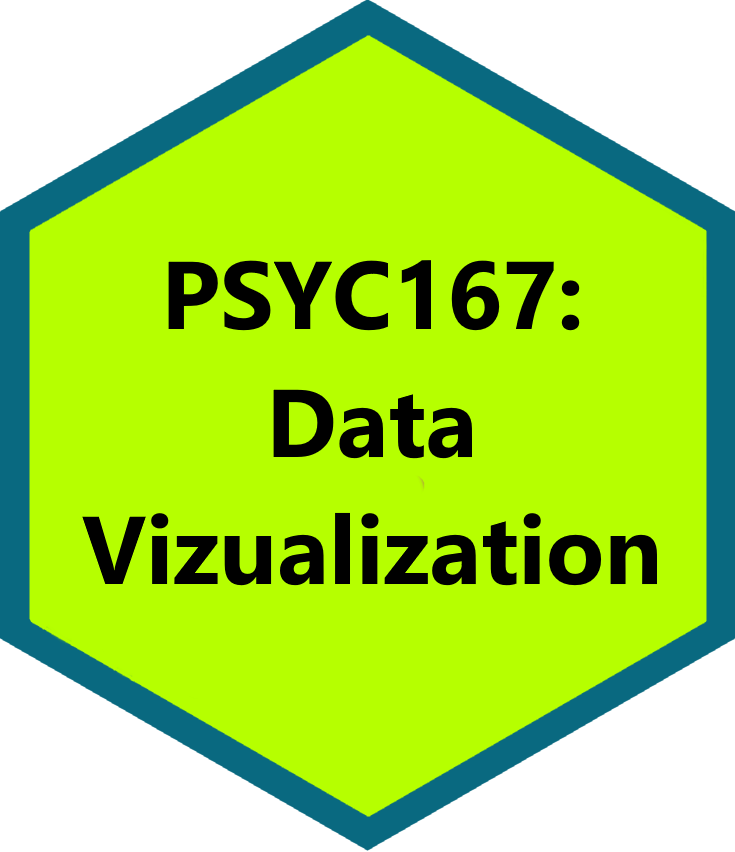

PSYC 167: Data Visualization
This is the course website for PSYC 167: Data Visualization, taught by Prof. Gabriel I. Cook; 1 credit
Description
Data visualization is the science and art of creating graphical representations of information and data. Visual representations provide accessible ways to see patterns, trends, and outliers in data. Variables like position, size, and orientation can focus attention and guide perception but can also bias interpretation of data. Students will learn how well-designed visualizations can reduce bias and improve comprehension for data thereby facilitating data-driven decision-making. Students will explore techniques for creating effective visualizations based on principles from cognitive and perceptual psychology, art, and design. Students will gain hands-on experience coding real-world data visualizations for local offices, organizations, and industry participants.
The course is targeted toward students interested in using visualizations to communicate their own messages, and students interested in creating better visualization tools and systems, and students with expressed interest in cognition and cognitive biases related to data communication. Students will engage in discussions of the readings, complete programming and data analysis assignments, and prepare a final project involving storytelling with data visualizations.